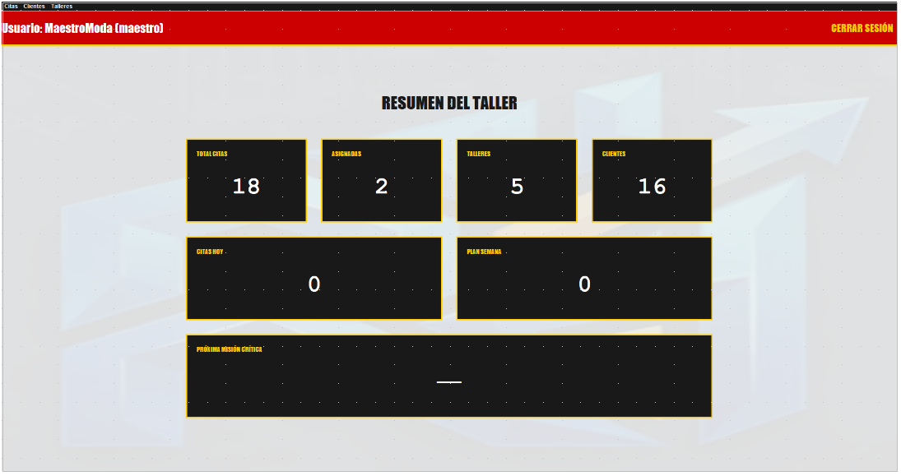

Proyectos destacados
Aquí encontrarás algunos de los proyectos que he desarrollado durante mi formación en Desarrollo de Aplicaciones Web: programación, bases de datos, sistemas, marcas y más.

Landing Page Personal
Desarrollo de una página web personal utilizando HTML y CSS, con diseño responsive y estructura profesional.
Ver proyecto
Base de Datos SQL
Diseño y modelado de una base de datos relacional con MySQL y PL/SQL, aplicando claves primarias, foráneas y normalización.
Ver proyecto
Aplicación en Java
Desarrollo de una aplicación en Java con POO, manejo de clases, herencia, encapsulación y estructuras de datos.
Ver proyecto© Web Personal creada para la materia de Lenguaje de Marcas
de DAW